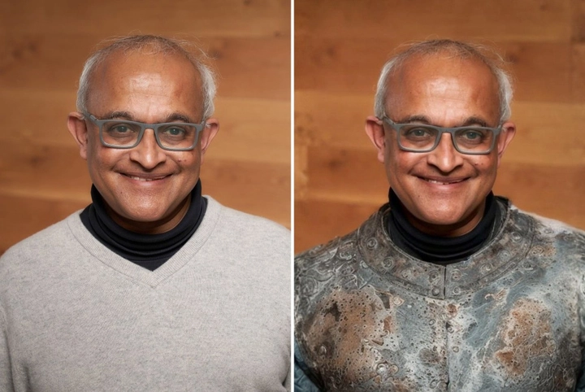
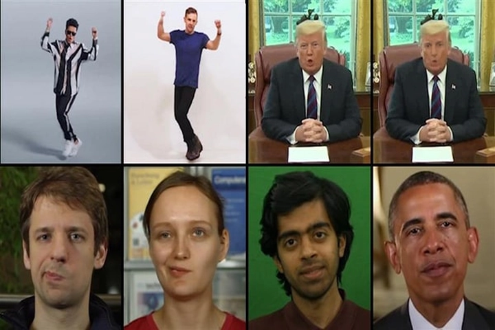
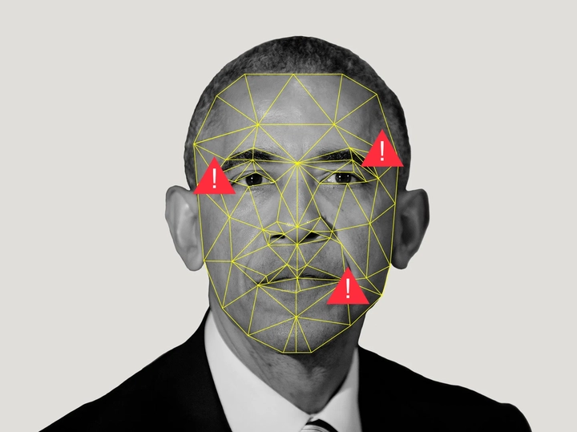

Deepfake và nguy cơ mất niềm tin trong kỷ nguyên AI
Chúng ta đang sống trong một kỷ nguyên mà ranh giới giữa thực tế và ảo ảnh trở nên mờ nhạt hơn bao giờ hết. Mỗi ngày, hàng tỷ hình ảnh, video, âm thanh được tạo ra và chia sẻ chỉ trong vài giây. Dòng chảy thông tin khổng lồ ấy khiến con người dường như ngập trong “thế giới dữ liệu”, nơi thật giả lẫn lộn, và cảm xúc – nhận thức – niềm tin đều có thể bị thao túng bởi công nghệ.
Trước đây, một tấm ảnh chụp, một đoạn video từng được xem là bằng chứng xác thực tuyệt đối. Nhưng giờ đây, với AI và học sâu (Deep Learning), mọi “bằng chứng” đều có thể bị thay đổi. Một gương mặt có thể bị thay thế, một giọng nói có thể được nhân bản, và một câu nói có thể bị gán ghép tinh vi đến mức ngay cả người trong cuộc cũng khó nhận ra sự khác biệt. Chỉ với vài dòng lệnh và vài phút xử lý, máy tính có thể dựng nên “hiện thực” hoàn toàn mới — thuyết phục, sinh động và nguy hiểm.
Điều đáng sợ hơn cả không nằm ở bản thân công nghệ, mà ở tác động xã hội mà nó tạo ra. Khi mọi thứ đều có thể bị giả mạo, niềm tin – thứ vốn là nền tảng của truyền thông, chính trị, và cả đời sống con người – bắt đầu lung lay. Ta không còn chắc chắn điều mình thấy có thật không, và sự nghi ngờ ấy dần lan rộng, âm ỉ, như một vết nứt trong lòng thế giới số.
Chính trong bối cảnh ấy, “deepfake” đã trở thành biểu tượng cho thời đại mới – thời đại mà công nghệ không chỉ tái tạo thế giới, mà còn tái định nghĩa cả khái niệm về sự thật.
1. Deepfake là gì? Cách công nghệ “giả mạo thực tại” hoạt động
Deepfake là sự kết hợp giữa Deep Learning (học sâu) và Fake (giả mạo) – một công nghệ sử dụng trí tuệ nhân tạo để tạo ra hoặc thay đổi hình ảnh, video, giọng nói của con người. Cốt lõi của nó là mạng đối sinh (GANs – Generative Adversarial Networks), nơi hai mạng AI “thi đấu” với nhau: một bên tạo ra hình ảnh giả, bên kia cố gắng phát hiện giả mạo. Qua hàng ngàn lần lặp lại, sản phẩm ngày càng trở nên chân thật đến mức… máy còn khó nhận ra, huống hồ con người.
Với deepfake, người ta có thể “đưa” khuôn mặt một người vào video người khác, khiến họ trông như đang nói hoặc làm điều chưa từng xảy ra. Ban đầu, công nghệ này được dùng cho điện ảnh – giúp hồi sinh diễn viên đã mất hoặc tạo nhân vật ảo sống động. Nhưng rồi, nó nhanh chóng bị lạm dụng: từ video khiêu dâm giả mạo người nổi tiếng, phát ngôn chính trị giả, cho đến lừa đảo nhận dạng qua video call.

Công nghệ deepfake phát triển nhanh hơn khả năng kiểm soát. Mỗi năm, các mô hình tạo sinh (như Midjourney, Runway, hay Sora của OpenAI) khiến việc làm video giả trở nên dễ dàng đến mức chỉ cần vài cú nhấp chuột. Cái ranh giới giữa “công cụ sáng tạo” và “vũ khí thao túng” ngày càng mong manh, và đó là lý do deepfake trở thành mối đe dọa an ninh thông tin mới của thế kỷ XXI.
2. Khi sự thật bị thao túng – Tin giả trong kỷ nguyên số
Nếu deepfake là “vỏ bọc hình ảnh” của sự giả mạo, thì tin giả (fake news) là “ngôn ngữ” của nó. Tin giả lan truyền nhanh hơn tin thật, bởi nó đánh vào cảm xúc, nỗi sợ và sự tò mò của con người. Một dòng trạng thái gây sốc, một bức ảnh “có vẻ thật”, hay một video deepfake được chia sẻ vài ngàn lượt là đủ để tạo ra một làn sóng thông tin sai lệch, thậm chí thay đổi cách người ta nghĩ về một vấn đề xã hội.
Tin giả không còn là trò đùa mạng xã hội — nó đã trở thành vũ khí chính trị và kinh tế. Trong nhiều chiến dịch bầu cử trên thế giới, deepfake và fake news từng được sử dụng để hạ uy tín đối thủ, thổi phồng scandal, hoặc gây chia rẽ trong cộng đồng. Doanh nghiệp cũng không tránh khỏi khi bị gán tin thất thiệt, khiến cổ phiếu sụt giảm chỉ trong vài giờ.
Điều đáng lo là: con người tin vào điều mình muốn tin. Khi mạng xã hội tạo ra “buồng vọng” (echo chamber) – nơi ta chỉ thấy điều hợp với quan điểm của mình – tin giả càng có cơ hội sống lâu. Nó không chỉ làm méo mó nhận thức, mà còn phân cực xã hội, khiến con người nghi ngờ lẫn nhau trong một thế giới vốn đã đầy xung đột.
3. Deepfake và chính trị – Khi công nghệ trở thành công cụ thao túng
Không lĩnh vực nào dễ bị tổn thương trước deepfake như chính trị. Một đoạn video ngắn, giả mạo lời phát biểu của một lãnh đạo quốc gia, có thể gây ra khủng hoảng ngoại giao hoặc làm chao đảo thị trường chỉ trong vài phút. Ở Mỹ, châu Âu và châu Á, đã từng xuất hiện những video deepfake mô phỏng chính trị gia tuyên bố chiến tranh, hoặc phát ngôn gây chia rẽ dân tộc — và dù bị đính chính sau đó, hậu quả tâm lý đã lan tỏa.
Deepfake khiến thời đại “hậu sự thật” (post-truth) càng trở nên nghiêm trọng. Khi không ai còn tin vào điều mình thấy, các thế lực thao túng dư luận càng dễ kiểm soát thông tin. Việc “gieo nghi ngờ” đôi khi còn hiệu quả hơn cả “tạo niềm tin”. Chính vì thế, nhiều quốc gia đã bắt đầu soạn luật chống deepfake, yêu cầu các nền tảng gắn nhãn nội dung AI hoặc truy tố người tạo video giả mạo có hại.
Tuy nhiên, vẫn còn khoảng trống lớn trong việc kiểm soát toàn cầu. Bởi deepfake không có biên giới, và chỉ cần một tài khoản ẩn danh, mọi sản phẩm giả mạo đều có thể được tung ra trong vài phút. Trong bối cảnh đó, nhận thức của người xem chính là “hàng rào phòng vệ” cuối cùng.
4. Ảnh hưởng đến đời sống cá nhân – Khi danh dự có thể bị “chế tạo”
Không chỉ các chính trị gia hay người nổi tiếng mới là nạn nhân của deepfake. Hàng nghìn người bình thường đã từng bị “ghép mặt” vào video nhạy cảm, bị bôi nhọ danh dự, hoặc bị tống tiền qua những hình ảnh không có thật. Nhiều trường hợp dẫn đến khủng hoảng tâm lý, trầm cảm, thậm chí tự tử, bởi hậu quả xã hội và cảm xúc mà công nghệ giả mạo gây ra.
Ở góc độ khác, deepfake cũng làm xói mòn niềm tin cá nhân. Khi một người có thể bị “giả mạo hoàn hảo”, liệu còn ai dám tin vào video call, ghi âm hay chứng cứ kỹ thuật số nữa? Trong thế giới ấy, sự thật trở nên mờ đục, còn danh dự – từng là tài sản không thể chạm tới – giờ có thể bị lập trình lại bằng vài dòng mã lệnh.
Đây là lý do vì sao nhiều tổ chức kêu gọi xây dựng khung pháp lý bảo vệ danh tính kỹ thuật số, đồng thời khuyến khích người dân nhận biết và báo cáo nội dung nghi ngờ giả mạo. Deepfake, suy cho cùng, không chỉ là câu chuyện của công nghệ – nó là cuộc chiến bảo vệ phẩm giá con người trong kỷ nguyên số.
5. AI chống AI – Cuộc chiến công nghệ nghịch lý
Trước mối đe dọa từ deepfake, các công ty công nghệ lớn như Microsoft, Google, Meta hay Adobe đang phát triển những công cụ phát hiện nội dung giả mạo dựa trên chính công nghệ AI. Đây là một nghịch lý mang tính biểu tượng của kỷ nguyên số: con người tạo ra trí tuệ nhân tạo, rồi lại phải dùng trí tuệ nhân tạo để chống lại chính nó.
Các mô hình AI chống deepfake hoạt động bằng cách phân tích hàng triệu khung hình, sóng âm thanh và pixel để phát hiện những chi tiết bất thường — như ánh sáng phản chiếu không tự nhiên trong mắt, nhịp chớp mi không đều, hoặc biến dạng nhỏ trong giọng nói. Những sai lệch ấy tuy không thể nhận ra bằng mắt thường, nhưng lại là “chữ ký kỹ thuật số” mà chỉ máy mới đọc được.

Tuy nhiên, đây là một cuộc đua không có hồi kết. Khi công nghệ nhận diện ngày càng chính xác, thì deepfake cũng ngày càng tinh vi — sử dụng thuật toán học sâu hơn, dữ liệu nhiều hơn và mô phỏng tốt hơn. Nhiều chuyên gia gọi đây là “vòng xoáy tiến hóa nhân tạo”: mỗi cải tiến ở bên phòng thủ lại tạo động lực cho bên tấn công nâng cấp.
Giống như một trò chơi mèo đuổi chuột trong thế giới số, nơi không ai thực sự chiến thắng, chỉ có những người chậm hơn sẽ trở thành nạn nhân. Trong tương lai, việc phát hiện deepfake có thể không chỉ là trách nhiệm của công ty công nghệ, mà trở thành một phần trong hạ tầng an ninh mạng toàn cầu.
6. Pháp lý và đạo đức – Cuộc chiến còn bỏ ngỏ
Trong khi công nghệ deepfake phát triển nhanh chóng, thì hệ thống pháp luật của thế giới lại đang loay hoay trong việc định danh và xử lý nó. Ở Mỹ, một số bang như California và Texas đã ban hành luật cấm sử dụng deepfake trong bầu cử hoặc trong nội dung khiêu dâm không được đồng ý. Nhưng trên quy mô quốc tế, vẫn chưa có một bộ luật toàn cầu thống nhất điều chỉnh hành vi giả mạo bằng AI.
Câu hỏi lớn đặt ra là: ai chịu trách nhiệm khi deepfake gây hại? Là người tạo ra video, nền tảng lan truyền nó, hay chính công cụ AI được dùng để dựng nên? Câu trả lời chưa rõ ràng, bởi ranh giới giữa sáng tạo và giả mạo ngày càng mờ.
Về mặt đạo đức, vấn đề càng phức tạp hơn. Liệu việc “hồi sinh” hình ảnh người đã khuất trong quảng cáo hay phim ảnh có bị coi là xúc phạm? Liệu nghệ sĩ có quyền kiểm soát hình ảnh ảo của mình khi AI có thể “diễn” thay họ?
Những câu hỏi này không chỉ mang tính pháp lý mà còn chạm đến bản chất nhân văn — con người có quyền được là chính mình, kể cả trong thế giới ảo.
Nếu pháp luật không theo kịp công nghệ, “vùng xám” của deepfake sẽ trở thành nơi trú ẩn cho những hành vi thao túng, tống tiền và hạ nhục danh dự mà nạn nhân khó lòng bảo vệ được bản thân.
7. Vai trò của truyền thông và người dùng
Trong cuộc chiến với tin giả và deepfake, truyền thông chính thống vẫn giữ vai trò tuyến đầu trong việc xác minh và kiểm chứng sự thật. Các hãng tin lớn hiện đã thành lập đội ngũ “fact-checking” (kiểm chứng dữ kiện) chuyên theo dõi các nội dung có khả năng bị làm giả.
Tuy nhiên, trong thời đại mạng xã hội, mỗi người dùng Internet cũng là một “người gác cổng thông tin”. Một cú chia sẻ, một bình luận, hoặc một lượt thích có thể giúp tin giả lan truyền nhanh gấp hàng nghìn lần. Vì vậy, ý thức và kỹ năng “đọc hiểu truyền thông” (media literacy) trở nên quan trọng không kém khả năng đọc – viết truyền thống.
Người dùng cần học cách đặt câu hỏi trước khi tin: Nguồn tin này từ đâu? Có bằng chứng xác thực không? Tại sao lại đăng ngay lúc này? Những thao tác tưởng nhỏ ấy chính là “bộ lọc an toàn” giúp xã hội số tránh khỏi hỗn loạn thông tin.
Một xã hội thông tin lành mạnh không thể được xây chỉ bằng luật pháp hay công nghệ, mà phải được duy trì bởi những công dân tỉnh táo. Chúng ta không cần nghi ngờ tất cả, nhưng cần biết nghi ngờ đúng lúc.
8. Công nghệ xác thực – Tia sáng giữa mê cung giả tạo
Trước cơn bão deepfake, nhiều tập đoàn công nghệ và tổ chức truyền thông đang đặt niềm tin vào các giải pháp xác thực kỹ thuật số.
Các công nghệ như Blockchain, watermark kỹ thuật số, chứng thực nguồn gốc nội dung (Content Provenance) đang được phát triển để đảm bảo rằng mỗi bức ảnh, video hoặc bài viết trên Internet đều có thể truy ngược nguồn gốc – biết rõ ai tạo ra, khi nào, và đã chỉnh sửa ra sao.

Một trong những sáng kiến nổi bật là C2PA (Coalition for Content Provenance and Authenticity) – liên minh gồm Adobe, BBC, New York Times, Microsoft và nhiều đơn vị truyền thông lớn khác. Họ đang triển khai hệ thống “chứng chỉ số cho nội dung” – tương tự như “hộ chiếu kỹ thuật số” cho hình ảnh và video.
Nhờ đó, người xem có thể bấm vào biểu tượng xác thực để xem thông tin gốc của nội dung, giảm thiểu nguy cơ bị lừa bởi những video được cắt ghép tinh vi.
Tuy chưa hoàn hảo, nhưng đây được coi là “lá chắn công nghệ” giúp bảo vệ sự thật trong kỷ nguyên AI. Nếu được áp dụng rộng rãi, nó có thể giúp con người lấy lại niềm tin vào những gì họ nhìn thấy và nghe thấy mỗi ngày.
9. Tương lai của niềm tin trong kỷ nguyên AI
Deepfake chỉ là một phần nổi của tảng băng chìm mang tên “sự thật nhân tạo” – nơi ranh giới giữa con người và máy móc, giữa thật và ảo, đang dần biến mất.
Trong tương lai không xa, công nghệ tạo sinh (Generative AI) có thể dựng nên cả thế giới ảo hoàn chỉnh: từ nhân vật, bối cảnh, cho tới cảm xúc, ngữ điệu – tất cả đều do máy tạo ra. Khi đó, câu hỏi không còn là “liệu điều này có thật không?” mà là “liệu chúng ta có quan tâm điều gì là thật nữa không?”
Đây chính là nguy cơ sâu xa nhất của kỷ nguyên AI: không chỉ là bị lừa, mà là mất đi khả năng phân biệt thật – giả. Nếu con người chấp nhận sống trong những “sự thật được lập trình”, xã hội sẽ đánh mất nền tảng đạo đức và nhận thức.
Tuy vậy, vẫn còn hy vọng. Con người là sinh vật biết phản tư — chúng ta có thể học cách sống cùng AI mà không bị nó dẫn dắt. Sự tỉnh táo, đạo đức và tinh thần phản biện sẽ là “vaccine” giúp xã hội đứng vững giữa biển thông tin hỗn loạn.
Cuộc chiến giữa thật và giả sẽ không bao giờ kết thúc. Nhưng chính ý thức con người — chứ không phải công nghệ — mới là “vũ khí” mạnh nhất để bảo vệ thế giới thật khỏi sự xâm lấn của ảo ảnh.